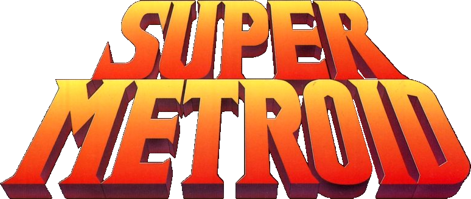

The Ultimate Guide to

The Metroid franchise is a Nintendo title that has had games ranging
from 1986 ongoing to the present day. The game that is in focus here is the 1994 SNES classic,
often regarded as the best in the series, Super Metroid (in-game referred to as Metroid 3).
While the gameplay is similar to the previous ones, the ambience such
as graphics and audio are renowned even by today's standards. Here, I invite you
to take a trip through the things that make the game what it is.